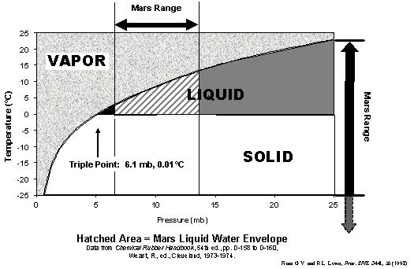

Odyssey gives evidence for
liquid water on Mars
Gilbert V.
Levin*, Spherix Incorporated, 12051 Indian
Creek Court, Beltsville, MD USA 20705
ABSTRACT
Recent Odyssey data indicate water ice within centimeters of the Martian surface over wide latitudes. A significant finding in itself, this has much broader applications. This paper cites water phase physics with respect to the Odyssey data and Viking and Pathfinder data to make a case for the availability of liquid water at the planet’s surface. Liquid water, possibly in biologically significant quantities, is predicted at least diurnally over broad reaches of Mars, including the two Viking landing sites where the Labeled Release (LR) life detection experiment obtained positive signals. Moreover, the data argue strongly against any putative oxidant in the Martian soil that many have assumed was responsible for the LR positive responses. The Odyssey data lend further strength to the author’s claim that the 1976 Viking LR results are of biological origin, and warrant his proposal to send a chiral LR experiment to Mars as an unambiguous way to end the controversy.
Keywords: Life on Mars, Odyssey mission, Viking mission, water on Mars, Labeled Release experiment
1. INTRODUCTION
In 1976, the LR on the Viking Mission performed experiments on the soil of Mars that satisfied the pre-mission criteria for the detection of microbial life[1],[2],[3]. However, the two other biological experiments, the Pyrolytic Release (PR)[4] experiment and the Gas Exchange (GEx)[5] experiment on Viking were negative, and, when no organic compounds were detected in the Martian soil by the Viking gas chromatograph mass-spectrometer (GCMS)[6], a biological explanation of the LR data was generally deemed a dim prospect. Soon after the LR data were received from Mars, it was proposed[7] that the surprising activity detected in the soil, and the equally surprising absence of organics therein, could be explained by hydrogen peroxide photochemically forming in the Martian upper atmosphere. According to this theory, the peroxide rained down onto the surface, where it became part of the soil samples tested. The evidence on which the theory was based was the brief burst of oxygen that had evolved from Martian soil when it was exposed to water vapor in the GEx experiment. This oxygen was attributed to the destructive reaction of water vapor with the hydrogen peroxide in the soil. It was also presumed that the peroxide had oxidized one or more of the LR substrates, releasing the 14C‑labeled gas detected by the LR, thereby creating a false positive in the biology experiment.
However, years of laboratory work by many researchers failed to duplicate all aspects of the Mars LR data by non-biological means[8],[9]. A direct comparison[10] between the GCMS and the LR found that the LR detected cells in an Antarctic soil reported by the GCMS to be free of organic matter. An explanation has been offered[11] for the failure of the Viking GCMS to detect any organic matter in the Martian soil: a 106 advantage in sensitivity of the LR over the GCMS makes it possible that the GCMS could not sense the small amount of organic matter associated with the low numbers of cells (~50) demonstrated to be detectable by the LR. Further evidence of organics on Mars was supplied by analyses of meteorites attributed to Martian surface or near-surface origins[12],[13],[14] that found organic matter in them. A recent research effort[15] quantified the detection of microorganisms by the GCMS. Sterilized Mars analogue soils were inoculated with measured quantities of live E. coli. Sealed under Martian ambient pressure, the samples were then pyrolyzed at Viking GCMS conditions: 500º C for 30 seconds. Analysis of the resultant vapors showed that as many as
3 x 109 organisms per gram of soil would have been undetectable by the Viking GCMS.
Since Viking, relevant discoveries have been made of organisms living under extreme environments. Many terrestrial microbial forms are now known that populate environmental extremes until recently thought inimical to life. The envelope of temperature, pressure, atmospheric composition, and salinity has been pushed to unanticipated
regions[16],[17],[18],[19],[20] including the environment of Mars. These findings make it likely that Martian organisms could be well
adapted to the current Martian conditions. They also raise the possibility that terrestrial microbes hitchhiking on a meteorite ejected to Mars or on a spacecraft could survive the trip, safely land on Mars, and populate wide areas of the planet[21].
Two sensitive spectroscopic searches[22],[23] found no trace of an oxidant in the Martian atmosphere. The Viking Magnetic Properties experiment reported results[24] consistent with its experimenter’s pre-mission criterion[25] for a non-oxidizing surface. More recently, additional variations of the oxidant theory have been published proposing superoxide ions[26] and iron (VI)[27] as the oxidant responsible for the Mars LR results. However, each of these theories has also been found[28],[29] wanting, and a case has been made[30] against the possibility of an oxidizing environment on the surface of Mars.
The LR data have recently been re-examined from a new point of view[31]. The temperature-related fluctuations in the amount of radioactive gas in the test cell may indicate a possible circadian rhythm superimposed upon a metabolic response.
Over the last quarter century, an independent, overriding barrier to the existence of life at the Viking landing sites or anywhere on the surface of Mars has been the presumed absence of liquid water. However, after years of reinforcing the arid Mars declared by Horowitz[32], the extensive literature on the subject now includes several recent reports stating that Mars had significant liquid water in its geological past[33],[34] and may have surface water today[35]. One paper[36] states that films of liquid water may currently exist over wide areas of Mars.
Levin concluded[37], in 1997, that the Viking LR experiment had, indeed, detected microbial life in the soil of Mars. Still, after more than a quarter of a century, the issue remains, at best, highly controversial. In response to mounting interest in the subject, NASA has sponsored a website, http://wufs.wustl.edu/missions/vlander/lr.html, dedicated to supplying scientists with digitized data of all the Viking LR experiments at both landing sites.
2. ODYSSEY FINDINGS
Last year, scientists reported[38],[39],[40]
that Odyssey’s Neutron Spectrometer in orbit around Mars had found hydrogen
enrichment over wide areas of the planet’s south polar, mid-latitude and
equatorial regions ranging from the surface to one meter deep, its penetration
limit. The likely candidate proposed
for this material was water ice, in amounts ranging up to 15 wt. percent of the
surface material. The second cited reference states “… the stratification of H
into layers with over a factor of ten difference in concentration seems hard to
sustain unless a volatility comparable to that of ice is responsible.” Odyssey findings[41]
reported this year reveal the Mars north polar area to be even richer in
hydrogen and of greater extent, including towards equatorial latitudes, than in
the south polar and adjacent regions.
Most recently, a July 24 news release[42]
confirms and extends these findings, reporting up to 50 percent water by mass
in polar regions and from two to ten percent closer to the equator.
Under the low Martian atmospheric pressure, any water ice so close to
the planet’s surface would be volatile, in turn being replenished from beneath.
Moreover, Pathfinder found[43]
diurnal surface temperatures to exceed 20º C. Where this occurs in regions with
near-surface ice, the ice would turn to liquid as the temperature rose above 0o
C, remaining so until boiling away at about 12o C under ambient
atmospheric pressure. This is supported
by the water phase model seen in Figure 1, and is consistent with a model[44]
for liquid water on Mars. The model is
illustrated by the cartoon in Figure 2.
It shows how the melting of an ice cube under Martian atmospheric
conditions produces a microenvironment adjacent to the cube where the
equilibrium results in liquid water.
Experimental evidence[45]
under simulated Martian conditions supports this simple thermodynamic
model. Presented concurrently with this
paper is a report[46] providing a
more detailed mathematic analysis explaining the existence of water in liquid
phase under Martian surface conditions when and where the surface temperature
exceeds 0°C. Surface temperatures above
freezing were found at the Viking 1 landing site, and snow or frost was seen
(Figure 3) at Viking site 2.
One reported[47]
analysis of the Odyssey data, in conjunction with orbiter images, offers an
interpretation of images of dark “dunes” seen on Mars in areas identified as
hydrogen-rich, as evidence of current biological activity.
Figure 1. H2O Phase Diagram Showing Range for Liquid
Water on Mars

Figure 2: Melting, Evaporation and Diffusion of Water
Under 10 mb CO2
3. IMPLICATIONS
The Odyssey Neutron Spectrometer studies make a strong case for
near-surface ice. Under prevailing
Martian conditions of atmospheric pressure and topsoil temperature, liquid
water would result from the equilibrium of the three phases of water, if only
as moisture in the soil. As the
temperature changes through the day, the liquid phase might last only hours, and
that might depend on the location and season.
However, when the surface temperature rises above freezing, and the
atmosphere pressure remains above the triple point, the effusing water vapor
will saturate the atmosphere immediately above, or adjacent to it, producing an
equilibrium including the liquid phase.
Figure 4 shows the approximate locations of the two Viking landers
superimposed on the epithermal neutron density map[48]
generated by Odyssey. The Viking 1
landing site, 22.483º N, 47.82º W, is in an area reported to be slightly to
moderately depleted in epithermal neutrons, registering approximately 7-8
epithermal neutrons per second as measured on the color bar legend, indicating
the presence of more hydrogen (interpreted as water) than in those areas where
little or no depletion of epithermal neutrons was found. The Viking 2 site, 47.968º N, 225.59º W, is
more heavily depleted (0.5-4.5
epithermal neutrons per second), indicating more water. The most recent findings[49]
are presented in Figures 5 and 6. The
data are shown in terms of hydrogen (water) abundance. In these later maps, Viking 1 is shown to
have landed in terrain containing about 2 percent water, while the water
content of the Viking 2 lander site is about 10 percent. These findings not only provide the strong
probability of liquid water being available for microorganisms, but also pose a
problem for the generally accepted chemical oxidant interpretation of the Mars
LR data as seen below.
If the putative oxidant were so labile to water vapor, as indicated by
the sole “evidence” for it, the pulse of oxygen detected by GEx, the constant
water vapor bath it would be subjected to in the upper Martian regolith makes
survival of the oxidant difficult to explain.
Were it to precipitate from the atmosphere daily, as some theories have
proposed, the oxygen thus generated over geological eons would be expected to
constitute more than the 0.13 percent of the Martian atmosphere as detected by
Viking. If, on the other hand, the
active agent in the Martian soil does not react with the water vapor
that the Odyssey data would require to permeate the soil, the evidence for
its being an oxidant fails.
4. CONCLUSION
The Odyssey findings seem to provide the liquid water necessary for
life, including at the Viking sites where the LR experiments obtained strong
positive results. In addition, they
remove the oxidant inimical to life.
Both results are compatible with and support the author’s conclusion
that the Viking LR detected living organisms in the soil of Mars. The proposed[50]
return to Mars of the LR experiment modified to detect chiral specificity in
the soil, a property shown by biology but not chemistry, could resolve the
issue beyond reasonable doubt.
ACKNOWLEDGMENTS
The review of this paper and constructive
suggestions made by Drs. Wesley Huntress and Robert Hazen of the Geophysical
Laboratory of the Carnegie Institution of Washington, DC are acknowledged with
much thanks.
The limitless and indispensable effort of Mrs. Kathy Brailer in preparing and proofing the many iterations of this report are gratefully acknowledged.
Figure 3. Heavy Frost, or Snow, Deposit at Viking
Lander 2 Site (Viking Lander Image 211093)
Figure 4. Odyssey Plot of Hydrogen Densities (Probably
Water)
on Mars with Viking 1
and 2 Landing Sites Located
Figure 5. Most Recent Odyssey Findings
Figure 6. Polar Views of Figure 5 Findings
REFERENCES
[1]. G.V. Levin and P.A. Straat, “Viking Labeled Release biology experiment: Interim results,” Science 194, 1322-1329, 1976.
[2]. G.V. Levin and P.A. Straat, “Recent results from the Viking Labeled Release experiment on Mars,” J. Geophys. Res. 82, 28, 4663-4667, 1977.
[3]. G.V. Levin and P.A. Straat, “A reappraisal of life on Mars,” The NASA Mars Conference, Science and Technology Series 71, 186-210, 1988.
[4]. N.H. Horowitz, G.L. Hobby, and S. Hubbard, “Viking on Mars: The carbon assimilation experiments,” J. Geophys. Res. 82, 4659-4662, 1977.
[5]. V.I. Oyama and B.J. Berdahl, “The Viking Gas Exchange Experiment results from Chryse and Utopia surface samples,” J. Geophys. Res. 82, 4669-4676, 1977.
[6]. K. Biemann et al, “The search for organic substances and inorganic volatile compounds in the surface of Mars,” J. Geophys. Res. 82, 4641-4658, 1977.
[7]. J. Oro, Presentation to Viking Science Team, JPL, Pasadena, CA, 1976.
[8]. G.V. Levin and P.A. Straat, “A search for a nonbiological explanation of the Viking Labeled Release life detection experiment,” Icarus 45, 494-516, 1981.
[9]. Op Cit 3.
[10]. G.V. Levin and P.A. Straat, “Antarctic soil no. 726 and implications for the Viking Labeled Release experiment,” J. Theoret. Biol. 91, 41-45, 1981.
[11]. G. Levin, L. Kuznetz, and A. Lafleur, “Approaches to resolving the question of life on Mars,” Instruments, Methods, and Missions for Astrobiology, SPIE Proceedings 4137, 48-62, 2000.
[12]. D.S. McKay et al., “Search for past life on Mars: Possible relic biogenic activity in Martian meteorite ALH84001,” Science 273, 924-930, 1996.
[13]. K.L. Thomas-Keprta
et al., “Truncated
hexa-octahedral magnetite crystals in ALH84001: Presumptive biosignatures,” Proc. Natl. Acad. Sci. USA 98, 5, 2164-2169, 2001.
[14]. K.L. Thomas-Keprta et al., “Elongated prismatic magnetite crystals in ALH84001 carbonate globules: Potential Martian magnetofossils,” Geochimica et Cosmochimica Acta 64, 23, 4049-4081, (2000).
[15]. D.P. Glavin et al., “Detecting pyrolysis products from bacteria on Mars,” Lunar and Planetary Science XXXIII, 1094.pdf, 2002.
[16]. D.N. Thomas and G.S. Dieckmann, “Antarctic sea ice¾a habitat for extremophiles,” Science 295, 641-645, 2002.
[17]. E.J. Carpenter, S. Lin, and D.G. Capone, “Bacterial activity in South Pole snow,” Applied and Environmental Microbiology 66, 10, 4514-4517, 2000.
[18]. R.H. Vreeland, W.D. Rosenweig, and D.W. Powers, “Isolation of a 250 million-year-old halotolerant bacterium from a primary salt crystal,” Nature 407, 897-900, 2000.
[19]. E.M. Rivkina et al., “Metabolic activity of permafrost bacteria below the freezing point,” Applied and Environmental Microbiology 66, 8, 3230-3233, 2000.
[20]. M.L. Skidmore, J.M. Foght, and M.J. Sharp, “Microbial life beneath a high arctic glacier,” Applied and Environmental Microbiology 66, 8, 3214-3220, 2000.
[21]. G.V. Levin, “Scientific logic for life on Mars,” Instruments, Methods, and Missions for Astrobiology, SPIE Proceedings 4495, 81-88, 2001.
[22]. R. Hanel et al., “Investigation of the Martian environment by infrared spectroscopy on Mariner 9,” Icarus 17, 423-442, 1972.
[23]. V. Krasnopolsky et al., “High-resolution spectroscopy of Mars at 3.7 and 8.4 mm: A sensitive search for H2O2, H2CO, HCl, and CH4, and detection of HDO,” J. Geophys. Res. 102, 6525-6534, 1997.
[24]. R.B. Hargraves et al., “The Viking Magnetic Properties Experiment: Primary mission results,” J. Geophys. Res. 82, 4547, 1977.
[25]. R.B. Hargraves, in The Viking Mission to Mars, Martin Marietta Corporation, 11-20, 1975.
[26]. A.S. Yen et al., “Evidence that the reactivity of the Martian soil is due to superoxide ions,” Science 289, 1909-1912, 2000.
[27]. A.L. Tsapin et al., “Iron(VI): Hypothetical candidate for the Martian oxidant,” Icarus 147, 68-78, 2000.
[28]. G.V. Levin, “O2ˉ ions and the Mars Labeled Release response,” Science 291, 2041a, 2001.
[29]. G.V. Levin, “Iron(VI) seems an unlikely explanation for Viking Labeled Release results,” Icarus 159, 1, 266-267, 2002.
[30]. G.V. Levin, “The oxides of Mars,” Instruments, Methods, and Missions for Astrobiology, SPIE Proceedings, 4495, 131-135, 2001.
[31]. J.D. Miller, P.A. Straat, and G.V. Levin, “Periodic analysis of the Viking Lander Labeled Release experiment,” Instruments, Methods, and Missions for Astrobiology, SPIE Proceedings, 4495, 96-107, 2001.
[32]. N.H. Horowitz, in To Utopia and Back, The Search for Life in the Solar System, W.H. Freeman and Co., 1986.
[33]. R.A. Kerr, “A dripping wet early Mars emerging from new pictures,” Science 290, 1879-1880, 2000.
[34]. R.A. Kerr, “Making a splash with a hint of Mars water,” Science 288, 2295-2297, 2000.
[35]. R.M. Haberle et al., “Meteorological control on the formation of Martian paleolakes,” Proc. Lunar and Planetary Science XXXI, 1509.pdf, 2000.
[36]. R.C. Quinn et al., “The stability of liquid-water films on the surface of
Mars,” Mars Surface and Satellites II,
DPS Pasadena Meeting 2000: Session 62,
2000.
[37]. G.V. Levin, “The Viking Labeled Release experiment and life on Mars,” Instruments, Methods, and Missions for the Investigation of Extraterrestrial Microorganisms, SPIE Proceedings, 3111, 146-161, 1997.
[38]. I. Mitrofanov. et al., “Maps of subsurface hydrogen from the high-energy neutron detector, Mars Odyssey,” Science 297, 78-81, 2002.
[39]. W.V. Boynton et al., “Distribution of hydrogen in the near-surface of Mars: Evidence for subsurface ice deposits,” Science 297, 81-85, 2002.
[40]. W.C. Feldman et al., “Global distribution of neutrons from Mars: Results from Mars Odyssey,” Science 297, 75-78, 2002.
[41]. I.G. Mitrofanov et al., “CO2 Snow Depth and Subsurface Water-Ice Abundance in the Northern Hemisphere of Mars,” Science 300, 2081-2084, 2003.
[42]. Los Alamos National Laboratory, News Release, July 24, 2003.
[43]. J. Schofield et al, “The Mars Pathfinder atmospheric structure investigation/meteorology (ASI/MET) experiment,” Science 278, 1752-1758, 1997.
[44]. G.V. Levin and R.L. Levin, “Liquid water and life on Mars,” Instruments, Methods, and Missions for Astrobiology, SPIE Proceedings 3441, 30-41, 1998.
[45]. Op Cit 11.
[46]. Levin, R.L. and J.L. Weatherwax, “Liquid water on Mars,” Instruments, Methods, and Missions for Astrobiology VII, SPIE Proceedings, in press.
[47]. T. Gánti, A. Horváth, Sz. Bérczi, A. Gesztesi, and E. Szathmáry, “Evidence for Water by Mars Odyssey is Compatible with a Biogenic DDS-Formation Process,” Lunar and Planetary Science XXXIV, 2003.
[48]. Op Cit. 39.
[49]. Op. Cit. 42.
[50]. G.V. Levin, J.D. Miller, P.A. Straat, and R.E. Hoover, “A Sterile Robotic Mars Soil Analyzer,” Instruments, Methods, and Missions for Astrobiology, SPIE Proceedings, 4859, 78-86, 2002.